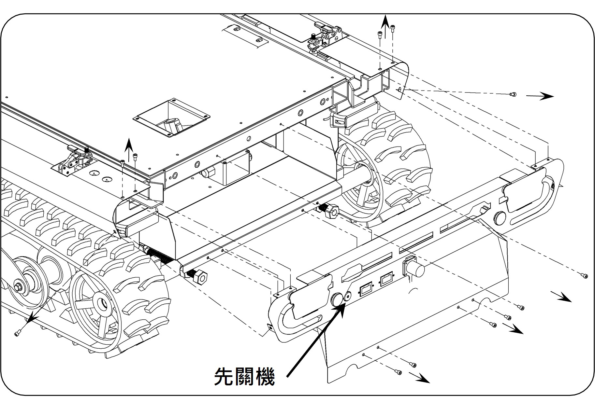
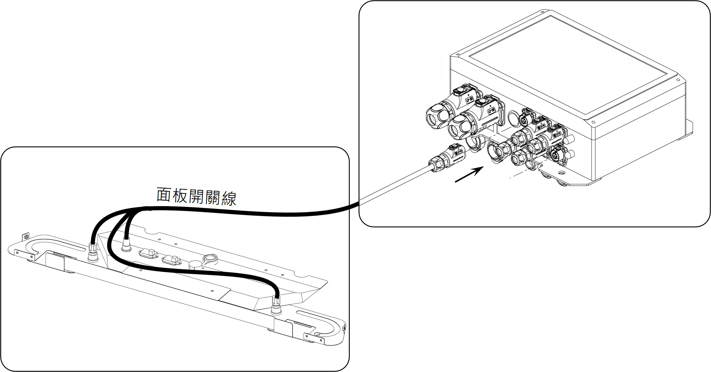
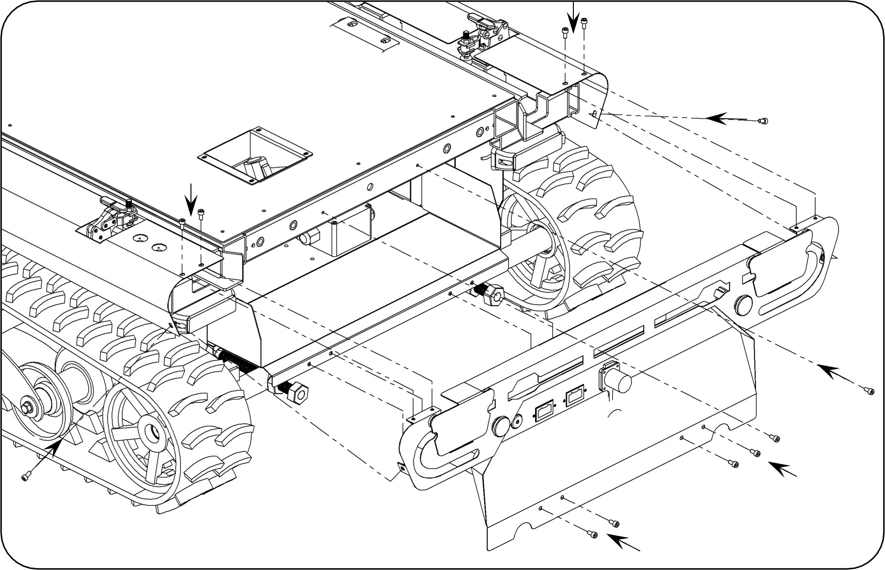

SOP-10：面板開關線組更換
故障描述：
底盤無法正常開關機 |
原因分析：
面板開關線組損壞
類別
品名 / 料號
規格 / 數量
一般工具
六角板手組
1 組
零組件
FRT509 面板開關線組 (308110039)
1 組
1 / 2
拆卸舊線組
1. 先將機器人關機，使用六角板手將後蓋板螺絲拆卸。
2. 將連接底盤電控盒的面板開關線卸除。
🔧 工具：
六角板手
📦 零件：
［內六角螺絲M5x10］*12

先將機器人關機，拆卸後蓋板螺絲
卸除面板開關線
2 / 2
安裝新線組與測試
1. 將新的面板開關線依步驟 1 裝回。
2. 使用六角板手將後蓋板鎖上，開啟電源進行測試，即可完成維修。
🔧 工具：
六角板手
📦 零件：
［內六角螺絲M5x10］*12

將新線組依序裝回

將後蓋板鎖固，開機測試完成維修
⬅️ 回到目錄首頁